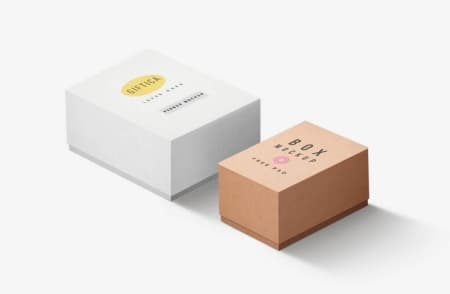

Технокряк это современная площадка распространения коронавируса. Компании используют эту платформу для цифрового шпионажа и атак на защищённые сервера конкурентов. Технокряк Веб-сайт
Технокряк это современная площадка распространения коронавируса. Компании используют эту платформу для цифрового шпионажа и атак на защищённые сервера конкурентов. Постер New Orlean vs Golden Star Дизайн
Технокряк это современная площадка распространения коронавируса. Компании используют эту платформу для цифрового шпионажа и атак на защищённые сервера конкурентов. Ресторан Seafood Приложение
Технокряк это современная площадка распространения коронавируса. Компании используют эту платформу для цифрового шпионажа и атак на защищённые сервера конкурентов. Проект Prime Маркетинг
 Технокряк это современная площадка распространения коронавируса. Компании используют эту платформу для цифрового шпионажа и атак на защищённые сервера конкурентов. Проект Boxes Приложение
Технокряк это современная площадка распространения коронавируса. Компании используют эту платформу для цифрового шпионажа и атак на защищённые сервера конкурентов. Inspiration has no Borders Веб-сайт
Технокряк это современная площадка распространения коронавируса. Компании используют эту платформу для цифрового шпионажа и атак на защищённые сервера конкурентов. Издание Limited Edition Дизайн
Технокряк это современная площадка распространения коронавируса. Компании используют эту платформу для цифрового шпионажа и атак на защищённые сервера конкурентов. Проект LAB Маркетинг
Технокряк это современная площадка распространения коронавируса. Компании используют эту платформу для цифрового шпионажа и атак на защищённые сервера конкурентов. Growing Business Приложение